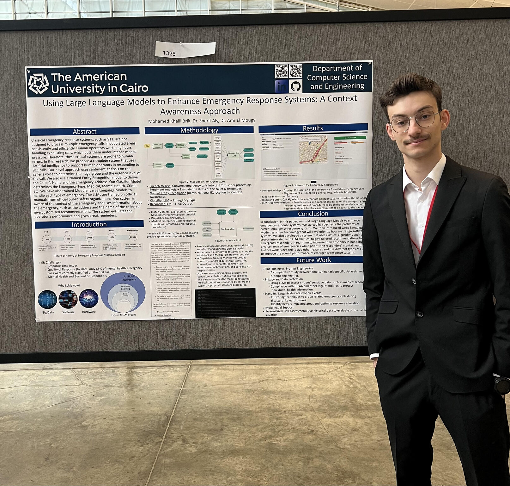

LLM Researcher

National Conference on Undergraduate Research
Attendees Engaged During Poster Session
Dedicated Research Presentation Session
Emergency Response Systems Research
Research Overview
"Using Large Language Models to Enhance Emergency Response Systems: A Context Awareness
Approach"
My research focuses on revolutionizing 911 emergency response systems by integrating Large Language
Models (LLMs) like LLaMA 2. The goal is to provide real-time context awareness and intelligent
assistance to human dispatchers, reducing mental load and improving response efficiency.
Publication & Presentation
This work was accepted and presented at the National Conference on Undergraduate Research (NCUR) 2025 in Pittsburgh, Pennsylvania.
- Premier Platform: Selected to present at the largest symposium for undergraduate research.
- Engagement: Presented to over 60 attendees including faculty, industry professionals, and peers.
- Recognition: Highlighted for innovative application of AI in public safety.
Research Focus
AI-Powered Emergency Response using Large Language Models to revolutionize 911 systems and support human dispatchers.
- LLM Integration: LLaMA 2 for intelligent assistance
- Context Awareness: Real-time situation understanding
- Human Support: Reducing mental pressure on operators
- System Enhancement: Improving response efficiency
Key Performance Results
Measurable accuracy achievements in Named Entity Recognition and emergency classification systems.
- Address Extraction: 76.5% accuracy from 911 call datasets
- Name Recognition: 48.3% accuracy from voice calls
- Emergency Classification: Accurate categorization system
- Real-time Processing: Live call transcription capability
Technical Innovations
Five core technical components creating a comprehensive AI-powered emergency response enhancement system.
- Named Entity Recognition: Automated caller information extraction
- Emergency Classification: Intelligent emergency type detection
- Modular LLM Architecture: Specialized models per emergency type
- Context-Aware Recommendations: Personalized response protocols
- Sentiment Analysis: Operator stress level monitoring
Mentorship & Collaboration
Conducted under the guidance of research mentors at The American University in Cairo.
- Dr. Sherif G. Aly Ahmed: Research guidance and expertise
- Dr. Amr El Mougy: Technical mentorship and support
- AUC Research Environment: Leveraged university resources for high-impact research.
System Architecture & Implementation
| Component | Technology | Purpose |
|---|---|---|
| Speech-to-Text | OpenAI Whisper | Real-time call transcription with noise robustness |
| Named Entity Recognition | BERT-large-cased | Extract caller information and emergency location |
| LLM Core | LLaMA 2 (Quantized) | Context understanding and response generation |
| Backend | Python / PyTorch | Model integration and pipeline orchestration |
Impact & Future Work
This research demonstrates the feasibility and potential of using local, privacy-preserving LLMs to assist emergency responders. Future work involves fine-tuning models on domain-specific datasets and integrating with live dispatch software.